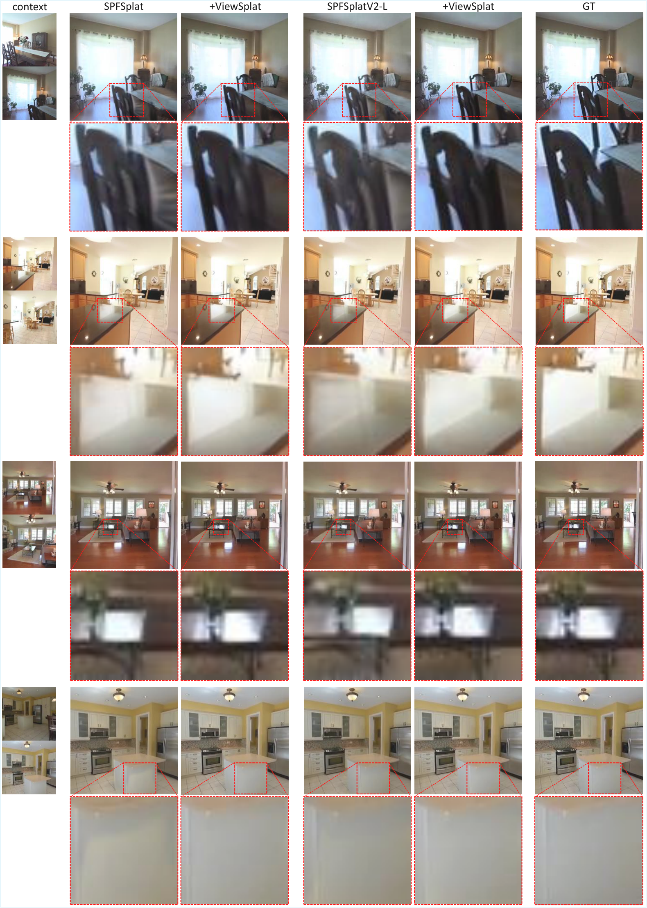

ViewSplat
简单摘要
我们提出了 ViewSplat，一种视图自适应 3D 高斯泼溅网络，用于从未摆姿势的图像合成新颖的视图。虽然最近的前馈 3D 高斯喷射通过绕过每个场景优化显着加速了 3D 场景重建，但基本的保真度差距仍然存在。我们将此瓶颈归因于单步前馈网络回归满足所有观点的静态高斯原语的能力有限。为了解决这个限制，我们将范式从静态原始回归转变为视图自适应动态泼溅。我们的管道学习的是一种可适应视图的潜在表示，而不是严格的高斯表示。
具体来说，ViewSplat 最初预测基本高斯基元以及动态 MLP 的权重。在渲染过程中，这些 MLP 将目标视图坐标作为输入，并预测每个高斯属性（即 3D 位置、比例、旋转、不透明度和颜色）的视图相关残差更新。这种机制，我们称之为视图自适应动态泼彩，允许每个基元纠正初始估计错误，有效地捕获高保真外观。大量实验表明，ViewSplat 实现了最先进的保真度，同时保持快速推理 (17 FPS) 和实时渲染 (154 FPS)。
关键词：新颖的视图合成·3D高斯泼溅·无姿态重建


简而言之，这篇论文关注的核心是：我们提出了 ViewSplat，一种视图自适应 3D 高斯泼溅网络，用于从未摆姿势的图像合成新颖的视图。虽然最近的前馈 3D 高斯喷射通过绕过每个场景优化显着加速了 3D 场景重建，但基本的保真度差距仍然存在。我们将此瓶颈归因于单步前馈网络回归满足所有观点的静态高斯原语的能力有限。为了解决这个限制…
1 简介 3D 高斯溅射 (3DGS) [17] 最近已成为 3D 计算机视觉中的强大表示形式，可实现高保真实时渲染。虽然传统的 3DGS 框架依赖于每个场景的优化，但最近的工作重点是可推广的前馈架构 [3,5,30,36,39]。这些模型直接从一些输入图像预测场景表示，从而能够即时 3D 重建未见过的场景和高质量的新颖视图合成 (NVS)，而无需昂贵的目标场景优化。这些可推广管道的主要瓶颈是严重依赖准确的相机姿势，通常通过运动结构†共同通讯作者预先计算。
arXiv:2603.25265v1 [cs.CV] 2026 年 3 月 26 日 2 M. Jeong 等人。无姿势输入·前馈网络 3D 高斯 目标姿态 目标视图 (b) 视图自适应动态泼溅（我们的） 视图自适应高斯更新 (a) 从静态 3D 高斯地面渲染 (b) 我们的 (a) SPFSplat (a) SPFSplat (b) 我们的地面真相 图 1：给定未摆姿势的图像作为输入，前馈网络重建 3D 高斯。
虽然 (a) 静态 3D 高斯渲染经常会遇到细节模糊的问题，但 (b) 我们的方法引入了以目标姿态为条件的视图自适应高斯更新，以动态地细化高斯。如底部面板所示，与 SPFSplat [11] 相比，我们的方法改进了细粒度细节（例如锐利边缘和镜面反射）的重建。 （SfM）[27]。为了解决这个问题，最近的工作 [11,12,16,28] 利用 3D 基础模型（例如 DUSt3R [33]、MASt3R [18] 和 VGGT [32]）来促进无位姿重建。
这些框架能够联合估计相机参数和 3D 高斯基元 [11,14]，直接从未经校准的野外图像提供稳健的 3D 重建。尽管取得了这些进步，前馈方法和基于优化的方法之间仍然存在显着的保真度差距[15,21,23,37,43]。我们将此瓶颈归因于前馈网络回归满足所有潜在观点的静态高斯原语的能力有限。这些模型通常采用单步回归
核心创新
综合引言与方法部分，这篇论文的核心创新可以概括为以下几方面：
1）问题定义与研究动机
1 简介 3D 高斯溅射 (3DGS) [17] 最近已成为 3D 计算机视觉中的强大表示形式，可实现高保真实时渲染。虽然传统的 3DGS 框架依赖于每个场景的优化，但最近的工作重点是可推广的前馈架构 [3,5,30,36,39]。这些模型直接从一些输入图像预测场景表示，从而能够即时 3D 重建未见过的场景和高质量的新颖视图合成 (NVS)，而无需昂贵的目标场景优化。这些可推广管道的主要瓶颈是严重依赖准确的相机姿势，通常通过运动结构†共同通讯作者预先计算。 arXiv:2603.25265v1 [cs.CV] 2026 年 3 月 26 日 2 M. Jeong 等人。无姿势输入·前馈网络 3D 高斯 目标姿态 目标视图 (b) 视图自适应动态泼溅（我们的） 视图自适应高斯更新 (a) 从静态 3D 高斯地面渲染 (b) 我们的 (a) SPFSplat (a) SPFSplat (b) 我们的地面真相 图 1：给定未摆姿势的图像作为输入，前馈网络重建 3D 高斯。虽然 (a) 静态 3D 高斯渲染经常会遇到细节模糊的问题，但 (b) 我们的方法引入了以目标姿态为条件的视图自适应高斯…
2）方法框架与核心模块
目标姿态重新参数化的详细信息在 sec:vdrefine 中，我们引入了目标姿态的 4D 重新参数化特征作为视图 MLP 的输入，以方便预测依赖于视图的高斯偏移。本节详细介绍了 3D 单位观察方向和 1D 对数距离与原始目标外在矩阵 的形式数学推导，遵循主论文中描述的公式。计算世界坐标中的相机中心。预测的目标外部参数代表世界到相机（W2C）的转换。对于世界（规范）坐标系中的任何点，其在相机坐标系中的位置定义为 ，其中 是正交旋转矩阵， 是平移向量。由于相机中心 C 对应于相机坐标系中的原点，因此我们按如下方式推导其世界坐标位置： 4D 目标姿态特征的构造。对于中心位置源自上下文视图 v 的像素 j 的每个规范高斯，我们计算从高斯中心到目标相机中心的相对像素位移向量为 。然后，视图 MLP 接收 4D 输入 ，该输入由单位观看方向和对数尺度距离 组成，由位移矢量导出，如下所示：其中 是用于数值稳定性的小常数 (, )。对数尺度变换的基本原理。距离参数的对数尺度的选择是由透视投影固有的非线性敏感性驱动的。在 3D 到 2D 映射中，对于距离较近的物体，摄像机移动的视觉影响更为明显。通过应…
3）实验设计与工程价值
在本节中，我们提供进一步的消融研究来验证 ViewSplat 框架的设计选择。本节中的所有实验都是通过将 ViewSplat 框架集成到 SPFSplat 基线中来进行的。目标姿势参数化的消融。为了凭经验验证 eq:4d_targetpose 中描述的我们提出的对数尺度距离的有效性，我们进行了一项消融研究，将其与标准线性距离度量进行比较。正如 tab:ablation_targetpose 中所总结的，在 RE10K 和 ACID 数据集上，就 PSNR 而言，对数尺度距离始终优于线性距离。 PSNR 的改进表明对数变换为视图 MLP 提供了更多信息的信号来细化高斯参数。具体来说，虽然这两个指标共享相同的标准化观看方向，但对数尺度距离表示对近场变化表现出更高的敏感性，使模型能够更好地捕获在近距离时最突出的复杂的与视图相关的效果。这些结果证实，重新参数化距离以与透视投影的非线性性质保持一致…
技术细节
下面按照论文的方法章节结构展开，重点说明模型的关键模块、公式设计和训练策略。
目标姿态重新参数化的详细信息在 sec:vdrefine 中，我们引入了目标姿态的 4D 重新参数化特征作为视图 MLP 的输入，以方便预测依赖于视图的高斯偏移。本节详细介绍了 3D 单位观察方向和 1D 对数距离与原始目标外在矩阵 的形式数学推导，遵循主论文中描述的公式。计算世界坐标中的相机中心。预测的目标外部参数代表世界到相机（W2C）的转换。对于世界（规范）坐标系中的任何点，其在相机坐标系中的位置定义为 ，其中 是正交旋转矩阵， 是平移向量。由于相机中心 C 对应于相机坐标系中的原点，因此我们按如下方式推导其世界坐标位置： 4D 目标姿态特征的构造。对于中心位置源自上下文视图 v 的像素 j 的每个规范高斯，我们计算从高斯中心到目标相机中心的相对像素位移向量为 。然后，视图 MLP 接收 4D 输入 ，该输入由单位观看方向和对数尺度距离 组成，由位移矢量导出，如下所示：其中 是用于数值稳定性的小常数 (, )。对数尺度变换的基本原理。距离参数的对数尺度的选择是由透视投影固有的非线性敏感性驱动的。在 3D 到 2D 映射中，对于距离较近的物体，摄像机移动的视觉影响更为明显。通过应用变换，我们压缩了距离的动态范围并保持对近场变化的更高灵敏度。这使得视图 MLP 可以优先考虑高斯模型的参数细化，其中视点变化会产生最显着的视觉影响，从而改进依赖于视图的外观变化的建模。损失函数图像渲染损失的详细公式。渲染损失通过将真实目标图像与渲染输出进行比较来监督新颖视图合成的质量。正如主论文中所述，该目标被定义为 MSE 光度损失和 LPIPS 感知损失的加权组合：其中充当平衡权重。这种公式鼓励模型实现像素级光度精度和特征级感知相似性，从而获得高质量的渲染结果。重投影损失。
由于我们的框架在没有地面实况姿势的规范空间中学习 3D 高斯中心，因此仅依赖渲染损失可能会导致训练不稳定以及对规范坐标系的过度拟合。为了减轻这种情况并确保在没有地面实况姿势的情况下的几何一致性，我们利用 ，它为 3D 高斯位置和估计的相机参数提供了明确的监督。该损失衡量了规范 3D 表示与其相应的 2D 观测值之间的对齐情况。具体来说，对于上下文视图中的每个像素，我们从规范空间投影 3D 高斯中心以使用 t…
$$ 0 = R^{t \to 1}C^{t \to 1} + t^{t \to 1} \implies C^{t \to 1} = -(R^{t \to 1})^Tt^{t \to 1}. $$
公式：0 = R^{t \to 1}C^{t \to 1} + t^{t \to 1} \意味着 C^{t \to 1} = -(R^{t \to 1})^Tt^{t \to 1}。 上：系统，其在相机坐标系中的位置定义为 ，其中 为正交旋转矩阵， 为平移向量。由于相机中心 C 对应于相机坐标系中的原点，因此我们按如下方式推导其世界坐标位置： 4D 目标姿态特征的构建...
$$ \mathbf{u}^v_j = \frac{\mathbf{d}^v_j}{\|\mathbf{d}^v_j\|_2}, \quad l^v_j = \log(\|\mathbf{d}^v_j\|_2 + \epsilon), \label{eq:4d_targetpose} $$
公式：\mathbf{u}^v_j = \frac{\mathbf{d}^v_j}{\|\mathbf{d}^v_j\|_2}, \quad l^v_j = \log(\|\mathbf{d}^v_j\|_2 + \epsilon), \label{eq:4d_targetpose} 上下文：对于上下文视图 v，我们计算从高斯中心到目标相机中心的相对像素位移向量为 。然后，视图 MLP 接收 4D 输入 ，它由单位观看方向和对数尺度距离 组成，由位移向量导出，如下所示：其中 是一个小常数 (,…
$$ \mathcal{L}_{render} = \mathcal{L}_{MSE}(I^t, \hat{I}^t) + \lambda_{LPIPS} \mathcal{L}_{LPIPS}(I^t, \hat{I}^t), \label{eq:renderingloss} $$
公式：\mathcal{L}_{render} = \mathcal{L}_{MSE}(I^t, \hat{I}^t) + \lambda_{LPIPS} \mathcal{L}_{LPIPS}(I^t, \hat{I}^t), \label{eq:渲染损失} 上下文：损失函数图像渲染损失的详细公式。渲染损失通过将真实目标图像与渲染输出进行比较来监督新颖视图合成的质量。正如主论文中所述，该目标被定义为 MSE 光度损失和 L 的加权组合……
$$ \mathcal{L}_{reproj} = \sum_{v=1}^N \sum_{j=1}^{H \times W} \|p_j^v - \pi(K^v, P^{v \to 1}, \mu_j^{v \to 1})\|, \label{eq:reprojectionloss} $$
公式：\mathcal{L}_{reproj} = \sum_{v=1}^N \sum_{j=1}^{H \times W} \|p_j^v - \pi(K^v, P^{v \to 1}, \mu_j^{v \to 1})\|, \label{eq:重投影损失} 上下：以及估计的相机参数。该损失衡量了规范 3D 表示与其相应的 2D 观测值之间的对齐情况。具体来说，对于上下文视图中的每个像素，我们使用估计的相对姿势和相机输入从规范空间投影 3D 高斯中心以进行视图…
$$ \mathcal{L}_{total} = \mathcal{L}_{render} + \lambda_{reproj}\mathcal{L}_{reproj}, \label{eq:supp_totalloss} $$
公式：\mathcal{L}_{total} = \mathcal{L}_{render} + \lambda_{reproj}\mathcal{L}_{reproj}, \label{eq:supp_totalloss} 上：\()表示相机投影功能。为了保持一致性，我们将这种重投影损失应用于从仅上下文分支和上下文与目标分支估计的姿势。这种损失可以稳定姿态估计并防止规范几何崩溃的退化解决方案。全损。 …


把全文方法串起来看，这篇论文的逻辑基本都遵循同一条主线：先把输入组织成更容易处理的表示，再通过模型结构和损失函数把这个表示推向目标输出，最后用可视化与数值实验共同证明该设计有效。
实验结论
实验部分主要回答两个问题：第一，方法是否真的优于已有基线；第二，这种优势来自哪一个设计决策。
在本节中，我们提供进一步的消融研究来验证 ViewSplat 框架的设计选择。本节中的所有实验都是通过将 ViewSplat 框架集成到 SPFSplat 基线中来进行的。目标姿势参数化的消融。为了凭经验验证 eq:4d_targetpose 中描述的我们提出的对数尺度距离的有效性，我们进行了一项消融研究，将其与标准线性距离度量进行比较。正如 tab:ablation_targetpose 中所总结的，在 RE10K 和 ACID 数据集上，就 PSNR 而言，对数尺度距离始终优于线性距离。
PSNR 的改进表明对数变换为视图 MLP 提供了更多信息的信号来细化高斯参数。具体来说，虽然这两个指标共享相同的标准化观看方向，但对数尺度距离表示对近场变化表现出更高的敏感性，使模型能够更好地捕获在近距离时最突出的复杂的与视图相关的效果。这些结果证实，重新参数化距离以与透视投影的非线性性质保持一致，可以比简单的线性距离表示更精确地建模依赖于视图的效果。查看 MLP 隐藏维度的效果。如tab:ablation_hiddendim所示，减少视图MLP的隐藏维度可以提高渲染速度和推理内存效率。
将 D 从 16 减少到 8 可提供明显的计算优势，将吞吐量提高 32 FPS，并将内存使用量减少 18.5%，同时仅导致 PSNR 下降幅度可以忽略不计 ( )。然而，进一步减小维度会导致重建质量 (PSNR) 明显下降，同时提供相对较小的额外速度改进。尽管我们的主要实验用于优先考虑渲染保真度，但我们确定最佳权衡点，在高质量渲染和实时效率之间提供平衡的折衷。
- 方法在核心指标上的优势与结构设计和训练目标直接相关；
- 消融实验表明，拿掉关键模块后性能与结果质量都有明显回落；
- 论文不仅比较数值，也关注可视化质量、稳定性和泛化能力等更贴近真实使用的信号。
理解评价
ViewSplat：用于前馈合成的视图自适应动态高斯泼溅 Moonyeon Jeong1、Seunggi Min1、Suhyeon Lee2,† 和 Hongje Seong1,† 1 首尔大学 2 韩国电子技术研究所 {jmy06051,minsk0725,hjseong}@uos.ac.kr suhyeon@keti.re.kr https://cvlab-uos.github.io/ViewSplat 摘要。
我们提出了 ViewSplat，一种视图自适应 3D 高斯泼溅网络，用于从未摆姿势的图像合成新颖的视图。虽然最近的前馈 3D 高斯喷射通过绕过每个场景优化显着加速了 3D 场景重建，但基本的保真度差距仍然存在。我们将此瓶颈归因于单步前馈网络回归满足所有观点的静态高斯原语的能力有限。为了解决这个限制，我们将范式从静态原始回归转变为视图自适应动态泼溅。我们的管道学习的是一种可适应视图的潜在表示，而不是严格的高斯表示。
具体来说，ViewSplat 最初预测基本高斯基元以及动态 MLP 的权重。在渲染过程中，这些 MLP 将目标视图坐标作为输入，并预测每个高斯属性（即 3D 位置、比例、旋转、不透明度和颜色）的视图相关残差更新。这种机制，我们称之为视图自适应动态泼彩，允许每个基元纠正初始估计错误，有效地捕获高保真外观。大量实验表明，ViewSplat 实现了最先进的保真度，同时保持快速推理 (17 FPS) 和实时渲染 (154 FPS)。
关键词：新颖视图合成·3D 高斯分布·无位姿重建 1 引言 3D 高斯分布（3DGS）[17] 最近作为一种强大的表示形式出现
如果把它当成研究参考，建议重点关注三件事：第一，这套方法真正依赖的归纳偏置是什么；第二，实验中真正拉开差距的模块是哪一个；第三，它的局限究竟来自数据、算力还是监督信号本身。
以下相关论文可以作为进一步追踪的入口：